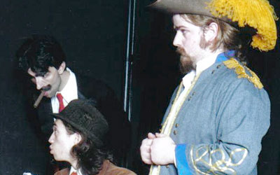

Tell's tale
Availability
Scripts
Vocal Scores
CD Accompaniment Tracks
Cast Recording
Music Samples
Tell’s Tale, also known as The Apple and the Archer, is the fun-filled, completely fictional story of William Tell and the events leading up to shooting the apple off his son’s head. Witness first hand the contest between the greedy Governor Gessler and William, and enjoy the zany antics of his henchmen, three characters who strongly resemble the Marx Brothers!
Cast Requirements
|
|